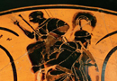
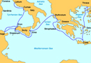

From Troy to Italy
At the end of the Trojan war Aeneas is one of the only Trojans to escape death when the Greeks sack the city of Troy. Poseidon helps him escape because it is fated that he should survive. Aeneas sets sail from Troy to Italy where he becomes the founder of Rome. Vergil has Aeneas leave Troy, taking his crippled father Anchises (whom we encountered early in this course in the myths surrounding Aphrodite) with him on his back. (see image 1) Aeneas also leaves Troy with his young son Ascanius, who later plays an important role in the foundation of a pre-Roman settlement. This provides for the Roman poet a direct link with Greek mythology and Greek ancestry for the Roman people, but also the divine ancestry of the Romans, as Aphrodite/Venus is the mother of Aeneas. Venus aids Aeneas upon his journey, just as Juno tries to thwart the young hero. Aeneas’ journey is in many ways comparable to that of Odysseus, the principle elements of which are the following. This map of Aeneas imagined wanderings will give a sense of his journey (see image 2)
{kind=link}
{kind=link}
After leaving Troy, Aeneas is said to have stopped at the island of Delos, the famous cult centre of Apollo, where his future as the founder of a great civilization was told: he would found the city at the place from which his ancestor Dardanus originally came. He at first believes that this is in Crete, but after staying there for a year, a pestilence and a vision from the gods send him in search of Italy, supposed to be the original home of Dardanus. Aeneas then goes to Epirus and Sicily, where his father Anchises dies. He then eventually ends up in Carthage, northern Africa, where Aeneas encounters the queen Dido. Elements of this journey link directly to the wanderings of Odysseus: while passing by Sicily, Achaemenides, a companion of Odysseus who survived the meeting with the Polyphemus, warns Aeneas about the Cyclopes.